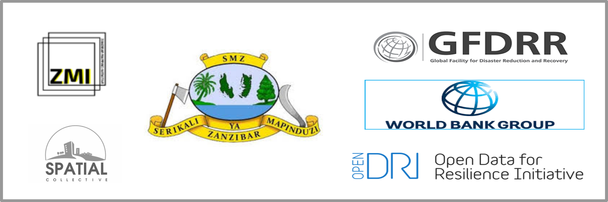

To view the results of the household survey, select a shehia then click on one of the four question categories to view the results.
Open Cities Africa, is an initiative carried out in 10 cities in Sub-Saharan Africa, to engage local government, civil society, and the private sector to develop the information infrastructures necessary to meet 21st century urban resilience challenges.Zanzibar City, one of the beneficiary cities, is a rapidly growing densely populated urban area with significant threat of flooding.Lack of critical geospatial data in Zanzibar however, hampers efforts of relevant bodies towards this disaster risk management.
Various data generation efforts were done inorder to address this lack of data including digitization of buildings and roads from 7cm drone imagery, household surveys using mobile phones and GPS data collection in 6 shehias (administrative areas) within the city identified as being at risk.
This map was developed from all the generated datasets as a tool to assist key stakeholders to utilize data in addressing natural disaster risk in the Zanzibar city.
